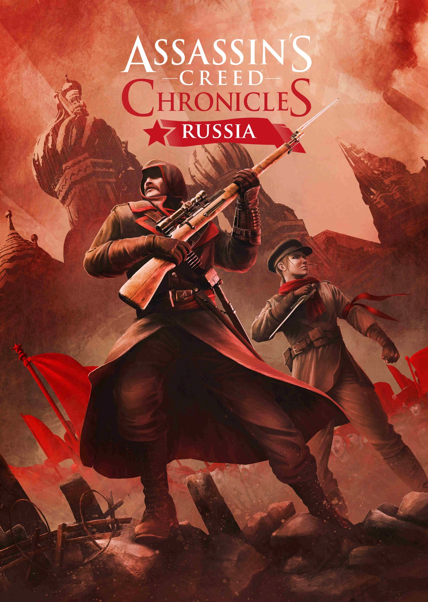

O Crepúsculo
Através da plataforma Helix da Abstergo, um Iniciado explora as memórias de uma das eras mais
frias e sombrias da Irmandade. Na simulação, controlamos o exausto veterano Nikolai Orelov na
Rússia de 1918, um cenário devastado pela guerra civil e pelo colapso do Império após a
Revolução Bolchevique.
Desejando apenas abandonar a Ordem e fugir do país com sua família, Nikolai aceita uma última
missão: infiltrar-se na casa onde a família do Czar está presa para recuperar a Caixa de
Precursores antes dos Templários. A missão sai do controle quando ele testemunha o massacre real
e decide resgatar a grã-duquesa Anastasia. Descobrindo que a jovem desenvolveu habilidades de
combate através de memórias genéticas despertadas de Shao Jun, Nikolai deve protegê-la tanto dos
revolucionários quanto de sua própria Ordem para garantir a sobrevivência de ambos.